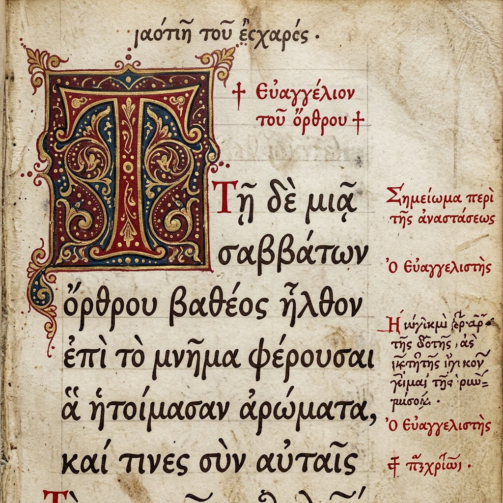
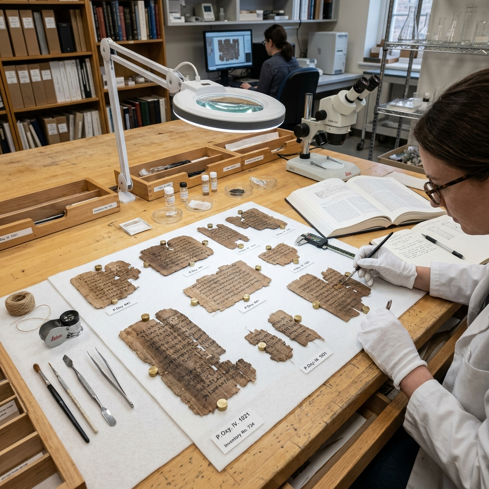

Research Focus
My research focuses on the textual history of the Septuagint, specifically the Minor Prophets recensions. I am currently working on digital reconstructions of Lucianic fragments discovered in the Cairo Genizah.
Recent Publications
Journal Article
The Lucianic Recension of the Minor Prophets: A New Synthesis
This paper provides a comprehensive analysis of the Lucianic fragments discovered in the Cairo Genizah...
Manuscript Gallery

